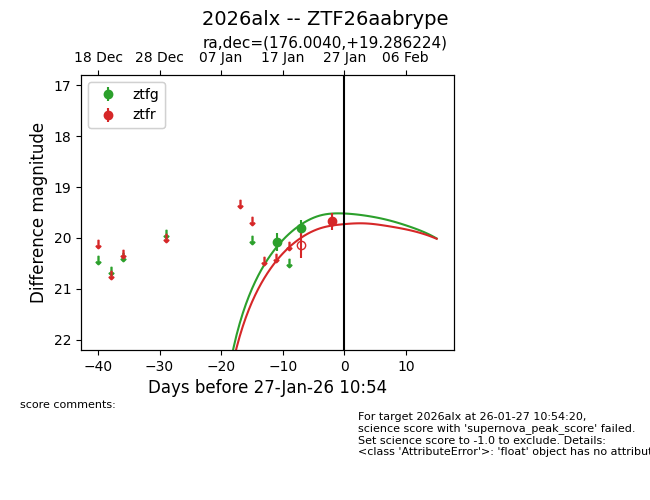
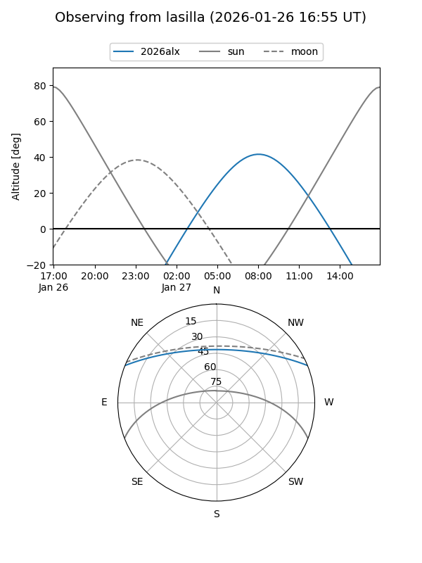
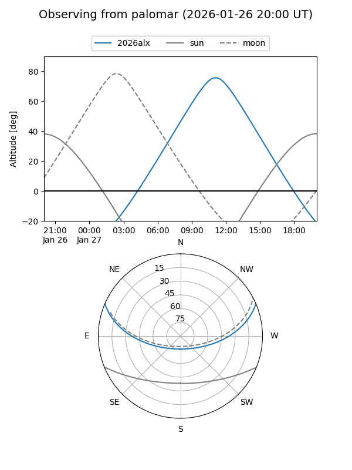
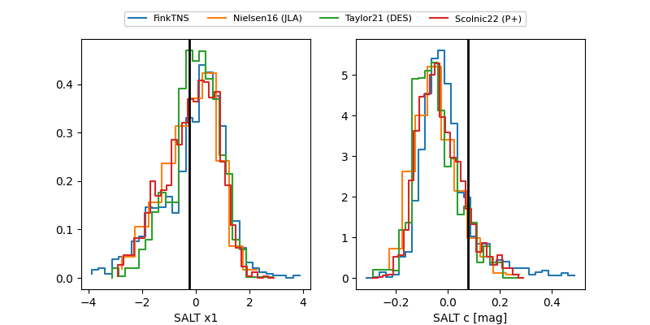

2026alx
Target 2026alx at 2026-01-27 10:56
Aliases and brokers:
FINK: link
Lasair: link
ALeRCE: link
TNS: link
YSE: link
alt names
ZTF26aabrype (ztf,fink_ztf)
2026alx (tns,yse)
Coordinates:
equatorial (ra, dec) = 176.0040,+19.28622
equatorial (HMS+DMS) = 11:44:00.97,+19:17:10.41
galactic (l, b) = (236.2469,+72.66122)
Flags:
Photometry:
last ztfg=19.80, ztfr=19.67
2 ztfg, 1 ztfr detections
Lightcurve

Visibility


Additional plots
